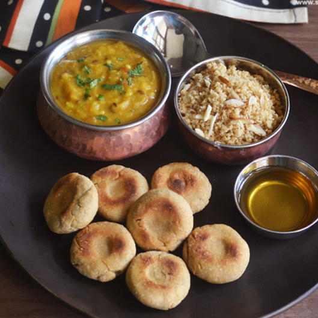

Hyderabadi Biryani (Telangana)
Aromatic basmati rice layered with marinated meat and cooked with saffron.
watch videoRosogolla (West Bengal)
Spongy, sweet dumplings made from chhena, soaked in sugar syrup.
watch videoMomos (Sikkim)
Steamed dumplings filled with vegetables or meat, served with spicy chutney.
watch video

Dal Baati Churma (Rajasthan)
Baked wheat balls served with spicy lentils and sweet churma.
watch videoLitti Chokha (Bihar)
Wheat flour dough balls stuffed with spiced gram flour and served with mashed vegetables.
watch video